Thung Lũng Vọng Âm
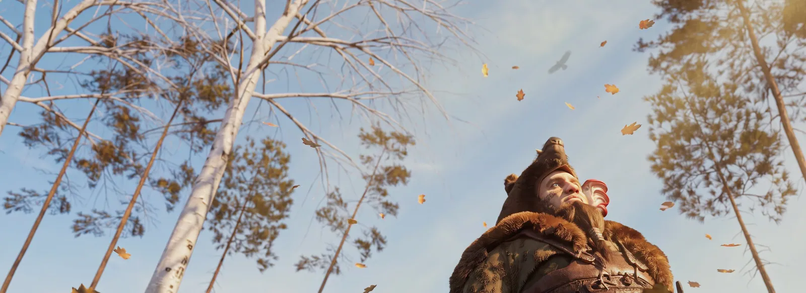
Chiếc hộp nhạc khẽ đung đưa bên hông Brann theo từng bước chân. Giai điệu mandolin từ khu vườn phía sau vẫn còn vương trong gió, lúc rõ, lúc mờ, rồi dần tan vào khoảng không. Brann không ngoái đầu lại. Có những cuộc gặp gỡ đẹp nhất… là khi ta biết mỉm cười và tiếp tục bước đi. Mặt trời đã dần khuất sau những rặng núi phía xa. Ánh hoàng hôn đỏ cam loang dài trên nền trời, rồi chậm rãi lịm xuống sau những tầng mây xám tím. Con đường đá trắng dẫn Brann rời khỏi thung lũng đầy hoa, đưa cậu tiến sâu vào một khu rừng thông cổ. Những thân thông đen sừng sững vươn lên như những cây cột khổng lồ chống đỡ cả bầu trời. Tầng tán dày đặc che gần hết ánh sáng cuối ngày, chỉ để lại những vệt nắng yếu ớt len qua kẽ lá, nhuộm cả khu rừng thành một màu đỏ đồng ấm nóng. Mùi nhựa thông quyện với hương đất khô sau nắng tạo nên thứ hương thơm vừa mạnh mẽ vừa hoang dã. Không gian tĩnh lặng đến lạ. Chỉ còn tiếng gió lướt qua những tán thông. Tiếng lá kim xào xạc. Và tiếng bước chân nhỏ bé của Brann vang lên giữa khu rừng rộng lớn. Cậu đã đi rất lâu, đến mức chỉ còn âm thanh của chiếc hộp nhạc va vào thắt lưng dần trở thành người bạn đồng hành duy nhất. Brann ngẩng đầu. Giữa những tầng lá rất cao, một bóng đen khổng lồ chớp nhoáng lướt qua, rồi biến mất. Cậu chỉ kịp nghĩ đó hẳn là một con chim săn mồi.
Ngay sau đó…
KENG!
Một tiếng kim loại chát chúa bất ngờ vang vọng giữa khu rừng. Rồi thêm một tiếng nữa.
KENG!
Lần này gần hơn. Tiếng thép va vào nhau sắc lạnh, dội từ thân cây này sang thân cây khác, tạo thành những hồi âm kéo dài bất tận. Âm thanh vọng khắp khu rừng, khiến cả đàn chim đang đậu trên ngọn thông đồng loạt bay vút lên. Cậu lập tức chạy về phía trước. Qua khỏi một triền dốc, khu rừng bất ngờ mở ra thành một khoảng đất rộng. Càng đến gần, tiếng kiếm va chạm càng dữ dội. Giữa những thân thông cao vút, hai bóng người lao vun vút qua khoảng rừng thưa.
Thoạt nhìn, Brann tưởng mình đang nhìn thấy cùng một người. Hai hiệp sĩ có vóc dáng giống hệt nhau. Cùng mái tóc nâu sẫm. Cùng chiếc mũ sắt hình cây nấm phủ đầy rêu đỏ. Cùng bộ giáp thép đan bằng những mắt xích tinh xảo, phủ ngoài là lớp áo choàng lưới đã sờn theo năm tháng. Ngay cả thanh trường kiếm trên tay họ cũng giống nhau đến từng chi tiết. Chỉ có vật cưỡi là khác biệt. Một người cưỡi trên lưng một chú kỳ lân. Bộ lông của nó sáng như ánh mặt trời, chiếc sừng dài màu ngà khẽ ánh lên trong ánh chiều tà, còn chiếc bờm bạc tung bay theo từng cú phi nước đại. Mỗi lần móng chạm đất, những tia sáng li ti lại bắn tung như bụi pha lê. Người còn lại cưỡi một con sư tử cái lực lưỡng với bộ lông vàng sẫm óng ánh. Những bắp cơ dưới lớp lông cuồn cuộn như sóng, từng cú bật nhảy mạnh đến mức đất đá cũng rung lên. Hai con thú lao ngược chiều nhau. Khoảng cách chỉ còn vài bước. Brann nín thở.
"Không kịp rồi…"
Hai thanh kiếm đồng loạt vung lên.
KENG!!
Một chùm tia lửa bắn tung giữa khoảng không. Cả khu rừng như rung lên vì cú va chạm ấy. Brann hoảng hốt.
"ĐỪNG ĐÁNH NỮA!"
Cậu vừa hét vừa chạy hết sức về phía hai hiệp sĩ. Nhưng điều xảy ra tiếp theo khiến cậu sững người. Ngay sau cú chạm kiếm… Hai người đồng loạt bật cười thành tiếng.
"Haha! Ngươi chậm một nhịp rồi!"
"Ngươi đừng có ăn gian! Rõ ràng kiếm của ta chạm trước!"
"Thua thì nhận đi!"
"Có giỏi thì đuổi theo!"
Cả kỳ lân và sư tử cái lập tức quay đầu. Kỳ lân lướt qua một thân cây. Sư tử cái lập tức đổi hướng cắt ngang. Họ không hề nhường nhau dù chỉ nửa bước. Brann nín thở.
Cứ thế này… sẽ có người bị thương mất.
Đúng lúc ấy… Hai người cùng tăng tốc. Một người định vượt bên trái. Người kia cũng chọn đúng bên trái. Hai con thú lao thẳng về phía Brann. Khoảng cách chỉ còn vài mét.
"Ơ… khoan…"
Brann đứng sững như một pho tượng.
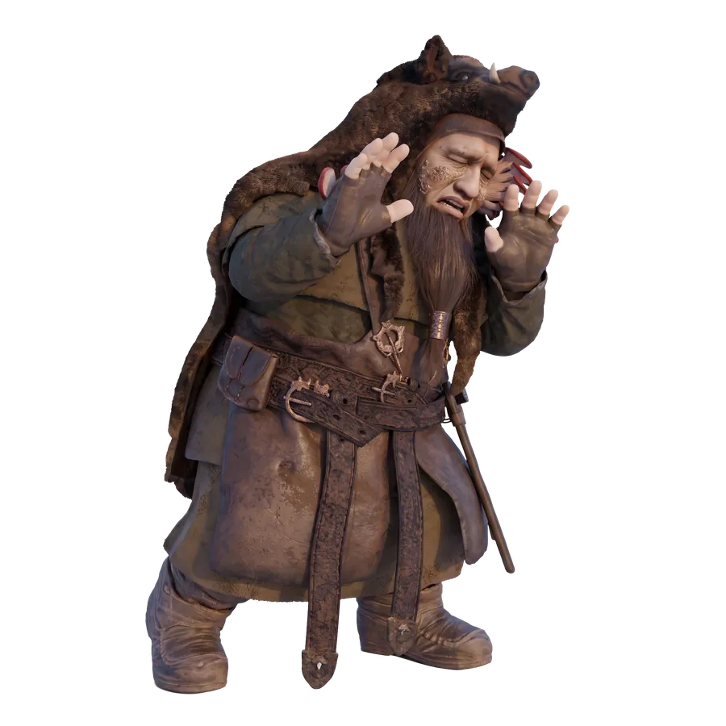
"Hai người—"
Hai con thú lao vun vút trên con đường.
Brann còn chưa kịp tránh.
"Coi chừng!"
Hai hiệp sĩ giật mình đồng thời kéo mạnh dây cương. Con kỳ lân hí vang, dựng đứng hai chân trước. Con sư tử gầm lên, trượt dài trên mặt đất. Đất đá bắn tung mù mịt. Khoảng cách giữa Brann và chiếc sừng kỳ lân chỉ còn đúng một gang tay. Không gian im bặt.
Ba người khựng lại một nhịp, đứng hình nhìn nhau. Rồi chàng trai cưỡi kỳ lân cười xòa.
"Xin lỗi!"
"Suýt nữa thì bọn ta có thêm một người bạn đồng hành."
Người cưỡi sư tử phủi lớp bụi trên vai giáp.
"Không."
"Suýt nữa thì có thêm một cái bia mộ."
Brann vẫn chưa hoàn hồn.
"…"
Cậu há miệng định nói gì đó. Nhưng chưa kịp cất lời… Hai anh em đã quay sang cãi nhau.
"Lỗi ngươi."
"Lỗi ngươi thì có."
"Ngươi cắt góc."
"Chiến thuật."
"Gian lận."
"Chiến thuật."
"Ngươi còn định đâm cả khách qua đường."
"Nhưng ta vẫn tới trước."
Brann đứng giữa. Ánh mắt hết nhìn người này… Lại nhìn sang người kia. Một ý nghĩ vụt qua đầu.
"Hai người này… trẻ con thật."
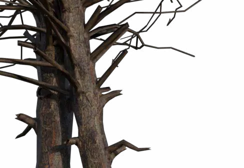
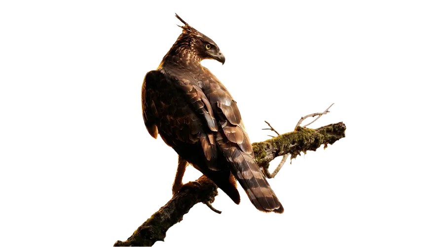
Đúng lúc ấy… Một tiếng rít rất khẽ vọng xuống từ tán thông. Brann theo phản xạ ngẩng đầu. Một con diều hâu đang lượn thành những vòng tròn rất cao. Rồi nhanh chóng khuất sau ánh nắng. Hai hiệp sĩ vẫn chẳng hề hay biết. Họ còn đang tranh cãi xem ai là người thắng. Một con quạ đen lặng lẽ đậu trên cành thông gần đó. Nó nghiêng đầu, lặng im quan sát cả ba người, rồi cất cánh bay đi. Brann khẽ nhíu mày. Không hiểu sao… Cậu có cảm giác mình vừa bỏ lỡ điều gì đó. Người cưỡi kỳ lân chống thanh kiếm lên vai.
"À quên mất. Ngươi vừa định nói gì ấy nhỉ?"

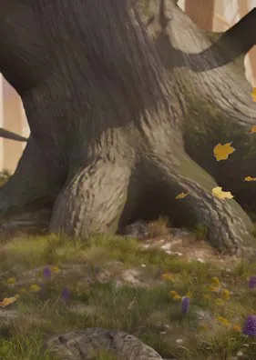
"Ta… ta tưởng hai người đang quyết đấu…"
"Cái gì cơ?"
Cả hai đồng thanh.
Rồi lại nhìn nhau.
"Ha ha ha ha!"
Người cưỡi kỳ lân chống chuôi kiếm xuống đất, cười đến mức phải cúi gập người.
"Đánh nhau á?"
"Ta với hắn?"
Người cưỡi sư tử cái khoác vai anh trai mình.
"Ta mà đánh hắn thật…"
"…thì hắn đã nằm dưới đất từ lâu rồi."
"Ngươi nói cái gì?"
"Ta nói thật."
"Muốn thử không?"
"Thử thì thử!"
Hai người vừa nói vừa đưa kiếm lên.
Brann giật mình lùi lại nửa bước.
"Keng!"
Hai lưỡi kiếm chạm nhẹ vào nhau.
Rồi cả hai lại phá lên cười.
Người cưỡi kỳ lân quay sang Brann.
"Đừng lo."
"Bọn ta chỉ thi xem ai chạm kiếm đẹp hơn thôi."
"Đôi lúc cũng thi xem ai làm đối phương mất thăng bằng."
Người còn lại gật gù.
"Thỉnh thoảng thi luôn xem ai xin lỗi nhanh hơn."
"Và hôm nay…"
Anh nhìn Brann từ đầu đến chân.
"…thì suýt nữa bọn ta còn thi xem ai đâm trúng ngươi trước."
"Ê! Đừng có dọa người ta."
"Ta có dọa đâu."
"Ta nói sự thật mà!"
Rồi cả hai lại cười như sấm. Thấy Brann còn ngơ ngác, chàng trai cưỡi sư tử chủ động bước tới làm quen.
“Anh bạn, ngươi tên gì nhỉ?”
Brann gãi đầu, cười gượng.
"Ta… ta là Brann. Một thợ rèn."
"Rất vui được gặp hai người."
Vừa dứt câu, hai anh em nhìn nhau. Ánh mắt bỗng sáng lên.
"Thợ rèn?" Vậy thì tuyệt quá."
Chàng kỵ sĩ leo phắt xuống lưng ngựa, ưỡn ngực đưa thanh kiếm của mình ra.
"Ngươi xem."
"Lưỡi kiếm của ta đẹp hơn đúng không?"
Cậu em nghe vậy lập tức dí thanh kiếm của mình vào.
"Đừng nghe hắn."
"Kiếm của ta cân hơn."
"Kiếm ta sắc hơn."
"Kiếm ta bền hơn."
"Kiếm ta đẹp hơn."
Brann vội vã can ngăn.
“Kh-Khoan đã!”
“Ta… ta còn chưa biết tên hai ngươi”
Hai hiệp sĩ khựng lại. Người đứng cạnh kỳ lân hắng giọng trước.
"Ta là Bjorn."
Người còn lại nhìn sang.
"…Không."
"Hôm qua ngươi là Bjorn rồi."
"Vậy hôm nay đổi."
"Ừ."
"Ta là Bjorn."
"Thế ta là Eirik."
"Được."
Hai người gật đầu với nhau như vừa giải quyết xong một vấn đề vô cùng nghiêm túc.
Brann đảo mắt nhìn người này rồi lại nhìn người kia. Hai gương mặt. Hai bộ giáp. Hai chiếc mũ. Ngay cả giọng nói cũng gần như giống hệt. Chỉ có một người đứng cạnh kỳ lân. Người còn lại đứng cạnh sư tử cái. Brann chớp mắt.
"Vậy…"
"Ai là Eirik?"
Hai hiệp sĩ cùng quay sang nhìn cậu. Rồi đồng thanh đáp.
"Không quan trọng."
Một người nhún vai.
"Đằng nào người khác cũng gọi nhầm."
Người còn lại cười lớn.
"Ngươi cứ gọi bọn ta là 'này' cũng được."
"Hoặc…"
Người cưỡi kỳ lân chỉ vào con thú bên cạnh mình.
"'Anh cưỡi kỳ lân.'"
Người còn lại vỗ nhẹ lên bờm sư tử cái.
"'Anh cưỡi sư tử.'"
"Cũng chưa ai nhầm bao giờ."
Brann cúi đầu, tự nhủ.
Kỳ lân là Bjorn.
Sư tử là Eirik.
Cậu lẩm nhẩm trong đầu như một người học thuộc bài, sợ rằng chỉ cần chớp mắt một cái sẽ lại quên mất.
Hai anh em vẫn còn đang tranh cãi xem cái tên Bjorn nghe oai hơn hay Eirik nghe oai hơn. Cuộc tranh luận chẳng đi đến đâu, bởi người nào cũng khăng khăng mình mới là người xứng đáng mang cái tên ấy hơn.
Một lúc sau, Bjorn chống thanh kiếm lên vai, quay sang Brann.
"Đi thôi."
Brann ngẩng đầu nhìn quanh.
"Đi đâu?"
Eirik nhún vai như thể đó là một câu hỏi chẳng cần câu trả lời.
"Chưa biết."
"Đi trước rồi tính sau."
"Biết đâu trên đường lại có thứ gì đó thú vị."
Brann chớp mắt. Cậu vốn quen với việc tính toán mọi thứ thật cẩn thận trước khi bắt tay vào làm. Từ việc chọn một thanh thép, nhóm một lò lửa cho đến rèn một lưỡi kiếm, tất cả đều phải có mục đích rõ ràng.
Thế nên cách trả lời của hai anh em khiến cậu không khỏi bối rối.
"Hai người lên đường mà… không biết mình sẽ đi đâu sao?"
Bjorn quay đầu lại, nở một nụ cười đầy hứng khởi.
"Nếu biết hết mọi chuyện rồi…"
"…thì còn lên đường làm gì nữa?"
Brann không đáp.
Cậu chỉ lặng lẽ bước theo sau, trong đầu vẫn không ngừng suy nghĩ về câu nói vừa rồi.
Con đường mòn men theo sườn núi, uốn lượn giữa những rặng thông đang nhuộm màu hoàng hôn. Gió mang theo mùi nhựa cây và cỏ dại, thỉnh thoảng lại cuốn những chiếc lá khô lăn qua mặt đất.
Bjorn và Eirik cưỡi thú đi phía trước. Họ vừa đi vừa trò chuyện, lúc thì cười lớn, lúc lại tranh cãi om sòm vì những chuyện hết sức vụn vặt.
Chẳng được bao lâu, cả hai đồng loạt kéo cương quay đầu lại.
"Brann."
"Hửm?"
"Ngươi đi chậm quá."
Brann cúi xuống nhìn đôi ủng da nặng trĩu của mình rồi mỉm cười ngượng nghịu.
"Ta vốn chỉ quen đi bộ."
Bjorn và Eirik đưa mắt nhìn nhau. Chỉ một ánh nhìn ngắn ngủi cũng đủ để cả hai hiểu đối phương đang nghĩ gì. Bjorn là người lên tiếng trước.
"Thi không?"
"Thi."
Eirik trả lời gần như ngay lập tức. Brann còn chưa kịp hiểu chuyện gì xảy ra thì cả hai đã đồng thời chìa tay về phía cậu.
"Lên đây."
"Không. Ngồi sư tử."
"Kỳ lân."
"Sư tử."
"Kỳ lân."
"Sư tử chạy êm hơn."
"Kỳ lân chạy nhanh hơn."
Brann đứng giữa hai cánh tay đang không ngừng kéo qua kéo lại, nhất thời chẳng biết nên phản ứng thế nào.
"Ta… ta vẫn có thể tự đi được."
"Không được."
Bjorn lắc đầu.
"Ngươi làm bọn ta chậm."
"Rất chậm."
Eirik nghiêm túc gật đầu phụ họa.
Cuối cùng, sau một hồi giằng co chẳng đi đến kết quả, hai anh em quyết định dùng cách quen thuộc nhất để giải quyết mọi việc.
"Thi."
"Thi."
Brann còn chưa hiểu họ định thi điều gì thì Bjorn đã nhanh chóng nhảy lên lưng kỳ lân.
"Người thắng sẽ được chở Brann."
"Được."
Hai con thú lập tức lao đi như hai mũi tên trắng và vàng xé gió. Chúng chỉ chạy một vòng quanh đồng cỏ rồi quay trở lại, nhưng cũng đủ để hai anh em tiếp tục cãi nhau xem ai là người về đích trước. Kết quả cuối cùng… Không ai chịu nhận mình thua. Vì vậy, Brann bị buộc phải ngồi luân phiên. Buổi sáng cậu cưỡi kỳ lân. Buổi chiều lại đổi sang sư tử cái. Hôm sau mọi thứ lại đổi ngược lại. Không ai chịu để người kia "thắng" lâu hơn một ngày.
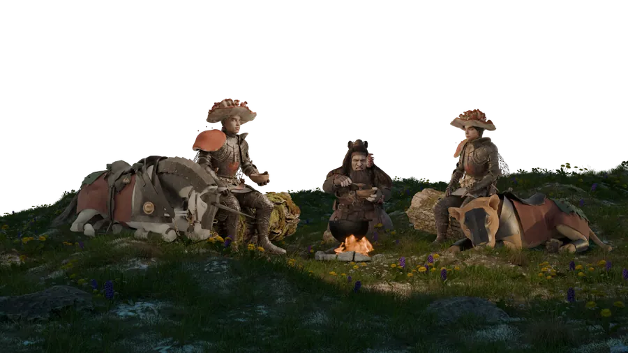
Những ngày đồng hành sau đó trôi qua nhanh hơn Brann tưởng. Hai anh em dường như có khả năng biến mọi việc trên đường thành một cuộc thi. Đi ngang một con suối, họ thi xem ai bắt được nhiều cá hơn. Nhìn thấy một vách đá, họ thi xem ai leo lên đỉnh trước. Ngay cả khi bắt gặp một cây táo rừng mọc cheo leo trên sườn núi, cả hai cũng nhất quyết tranh nhau xem ai hái được quả đầu tiên. Kết quả là chẳng ai hái được. Cả Bjorn lẫn Eirik đều trượt chân, lăn thẳng xuống đống cỏ phía dưới rồi nằm ngửa nhìn trời cười sặc sụa như hai đứa trẻ.
Brann ngồi gần đó, vừa sửa lại quai yên vừa khẽ lắc đầu.
"Đúng là trẻ con…"
Nhìn họ như thế, cậu bất giác nhớ đến Alaric và Astrid. Một bên yêu thích những buổi trà chiều yên bình. Một bên lại không thể đứng yên lấy quá vài phút. Thế nhưng, kỳ lạ thay, cả hai đều khiến người khác cảm thấy rất dễ chịu khi ở cạnh.
Đêm đến, ba người nhóm lửa nghỉ chân bên một mỏm đá. Bjorn bỏ vào nồi súp năm cây nấm rừng. Thấy vậy, Eirik lập tức chạy đi hái thêm sáu cây khác rồi thả tất cả vào nồi.
"Ta nhiều hơn."
Bjorn không chịu thua, lại xách giỏ chạy mất.
"Thế thì ta bảy."
Đến khi Brann phát hiện thì đã quá muộn. Nồi súp trở nên đặc quánh vì đầy nấm. Nó mặn đến mức ngay cả con sư tử cái cũng quay mặt đi, còn con kỳ lân thì khịt mũi rồi lùi hẳn ra xa. Ba người nhìn nhau. Rồi cùng bật cười. Đó là lần đầu tiên, Brann cười lớn đến như vậy kể từ khi bước chân vào Wonderland.
Thời gian lặng lẽ trôi qua.
Brann dần quen với nhịp sống ồn ào của hai anh em.
Cậu bắt đầu đoán được khi nào Bjorn sẽ là người khởi xướng một cuộc thi, khi nào Eirik sẽ là người lập tức hưởng ứng. Cậu cũng dần nhận ra rằng, dù cả hai lúc nào cũng tranh nhau từng chút một, nhưng chưa bao giờ thật sự bỏ mặc đối phương ở phía sau.
Thế nhưng…
Việc nhớ tên họ vẫn là một thử thách.
Có lần, Brann vô thức gọi:
"Bjorn…"
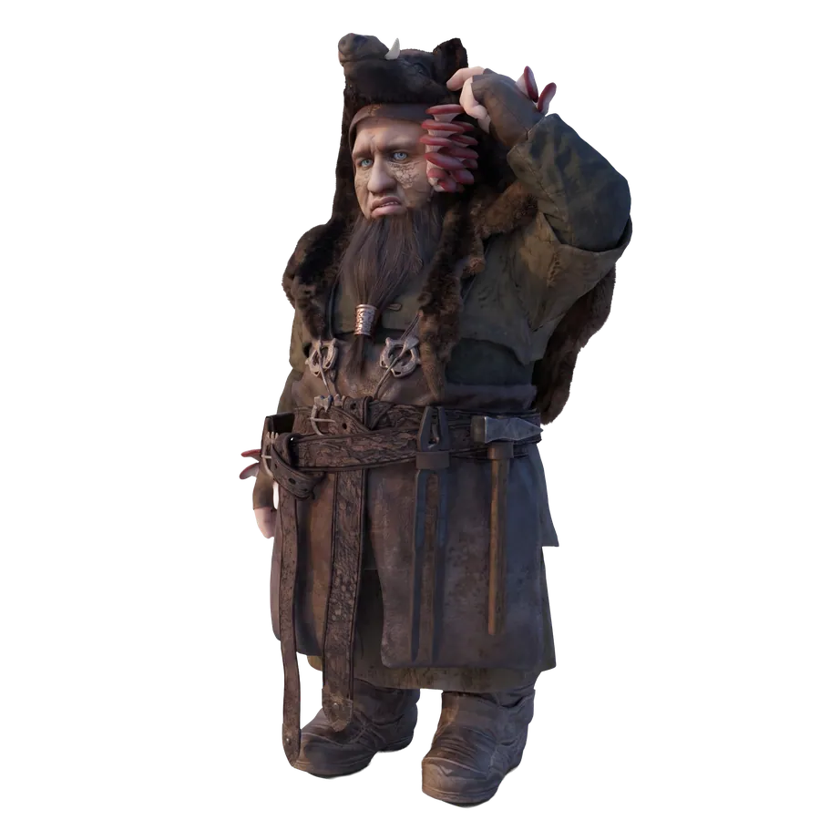
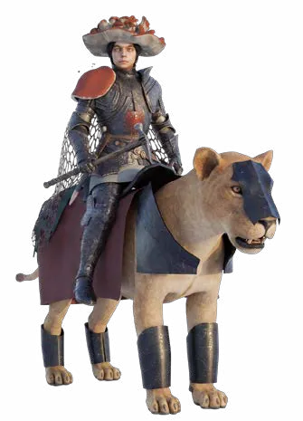
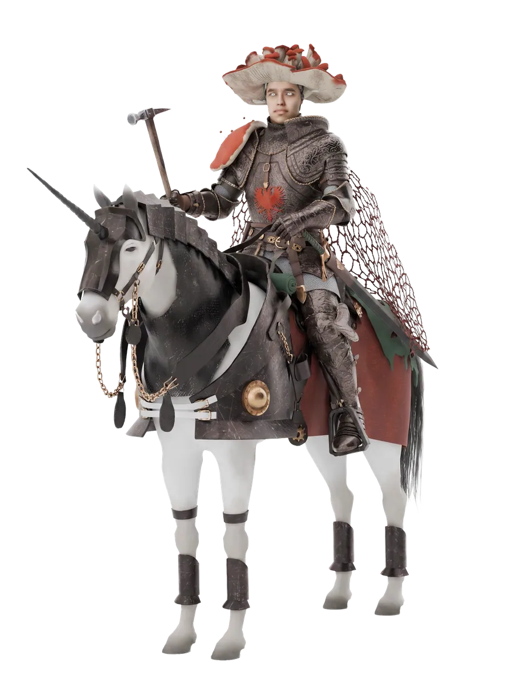
Người đứng cạnh sư tử cái quay đầu lại.
Cùng lúc đó, người đứng cạnh kỳ lân cũng đáp:
"Hửm?"
Brann ngượng đến đỏ cả mặt.
"Xin… xin lỗi."
Hai anh em nhìn nhau.
Rồi cùng cười phá lên.
Bjorn khoác vai em trai.
"Thấy chưa?"
"Ta đã bảo rồi."
"Kiểu gì cũng nhầm."
Eirik cười đến mức phải chống tay lên đầu gối.
"Đừng cố quá."
"Ở cạnh bọn ta thêm vài hôm nữa, tự khắc sẽ nhớ thôi."
Brann chỉ biết gãi đầu cười trừ.
Cậu lại lẩm bẩm trong đầu.
Kỳ lân là Bjorn.
Sư tử là Eirik.
Lần này nhất định không được nhầm nữa…
Nhưng chỉ vài ngày sau…
Cậu lại nhầm, đến mức chính cậu cũng bật cười bất lực. Bjorn chống thanh kiếm lên vai, cười đến chảy cả nước mắt.
"Thôi bỏ đi."
"Ta thấy ngươi nhớ tên kỳ lân với sư tử còn nhanh hơn nhớ tên bọn ta."
Eirik gật đầu đầy đồng tình.
"Ít ra bọn chúng cũng không cãi nhau xem ai là Bjorn."
Brann chỉ biết thở dài.
"Các ngươi không thấy phiền à?"
Hai anh em nhìn nhau.
Rồi gần như đồng thanh.
"Không."
"Tại sao?"
Bjorn nhún vai.
"Vì rồi ngươi sẽ nhớ."
Eirik gật đầu.
"Chỉ là chưa phải bây giờ."
Brann còn chưa kịp hiểu câu nói ấy thì Bjorn đã chỉ về phía trước.
"Đến nơi rồi."
Con đường đột ngột hẹp lại.
Hai vách núi đá dựng đứng ép sát vào nhau, để lại một lối đi chỉ vừa đủ cho hai con thú cưỡi song song. Những thân thông đen vươn lên dọc theo sườn núi, che khuất gần hết bầu trời. Ánh nắng cuối ngày chỉ còn lọt xuống thành từng vệt đỏ sẫm, nhuộm mặt đất đầy lá thông thành màu của than hồng.
Một tấm bia đá cũ phủ đầy rêu nghiêng mình bên lối vào.
Những dòng chữ đã mờ gần hết.
Chỉ còn đọc được vài ký tự cuối cùng.
"…Thung Lũng Vọng Âm…"
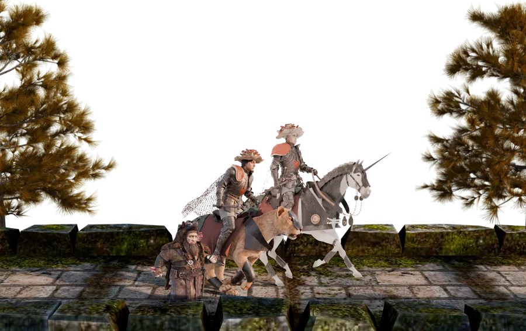
Bjorn bước xuống khỏi kỳ lân, phủi lớp bụi trên tấm bia.
"Nghe ngầu đấy."
Eirik chống cằm.
"Có muốn thi không?"
Brann nhíu mày.
"Đừng nói là…"
Bjorn chỉ về phía con đường ngoằn ngoèo phía trước.
"Ai ra khỏi thung lũng trước."
Eirik cười.
"Người thua nấu bữa tối."
"Được."
Brann còn chưa kịp mở miệng.
Hai người đã đập tay vào nhau.
"Ba…"
"Hai…"
"Một!"
Bjorn thúc kỳ lân vượt lên trước vài bước rồi ngoái đầu cười lớn. Eirik lập tức cho sư tử cái tăng tốc, cố tình ép sát sang bên cạnh không chịu thua kém.
"Khoan!"
Brann chỉ kịp gọi với. Tiếng vó ngựa và tiếng chân sư tử nhanh chóng bị nuốt chửng bởi những vách đá xám lạnh. Cậu chỉ còn biết chạy theo. Càng đi sâu vào thung lũng, không gian càng trở nên tĩnh lặng. Gió không còn luồn qua những tán cây. Tiếng chim cũng biến mất. Chỉ còn tiếng vó kỳ lân, tiếng chân sư tử và tiếng bước chân của Brann vang vọng giữa hai vách đá. Mỗi âm thanh đều dội ngược trở lại nhiều lần, méo mó như có ai đó đang lặp lại chúng bằng một giọng nói khác. Bjorn cười. Tiếng cười ấy vọng thành hàng chục tiếng cười khác. Eirik đáp lại một câu đùa. Câu nói cũng bị xé vụn rồi trả về từ bốn phía. Brann khẽ nhíu mày. Cậu có cảm giác những tiếng vọng ấy… không hoàn toàn giống lời họ vừa nói. Âm thanh không chỉ vọng một lần. Mà lặp đi lặp lại. Như thể có thêm rất nhiều người đang cùng bước phía sau. Brann ngoái đầu. Không có ai. Phía trước, tiếng cười của Bjorn và Eirik vẫn vọng lại.
Nhưng càng đi sâu… Tiếng cười ấy bắt đầu thay đổi. Lúc thì rất gần. Lúc lại vang lên từ một vách đá khác. Có lúc… Brann nghe thấy cả tiếng của chính mình. Dù cậu chưa hề mở miệng.
"Brann…"
Cậu giật mình quay lại. Không có ai.
"Brann…"
Lần này, giọng nói vang lên từ phía bên phải. Rất giống Alaric.
"Brann…"
Rồi lại thành giọng Astrid. Những âm thanh quen thuộc liên tục vọng khắp thung lũng, chồng chéo lên nhau như một bản hợp xướng méo mó. Brann siết chặt cán búa. Trong lòng bắt đầu dâng lên một cảm giác bất an. Ở phía trước. Bjorn và Eirik vẫn đang thi. Nhưng khoảng cách giữa hai người ngày một xa. Và những tiếng vọng… Cũng ngày một nhiều hơn. Tiếng vó kỳ lân và tiếng chân sư tử dần mất hút sau những khúc quanh ngoằn ngoèo của thung lũng. Brann tăng tốc. Tiếng vọng dưới chân núi khiến cậu không còn phân biệt được đâu là âm thanh thật, đâu chỉ là những tiếng dội từ vách đá. Mỗi bước chân đều như có hàng chục người khác cùng bước theo phía sau. Bỗng nhiên…
Choang!
Tiếng kim loại va chạm vang lên từ rất xa. Rồi thêm một tiếng nữa.
Choang!
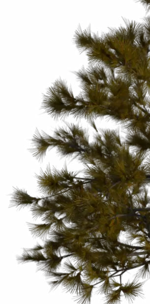
Brann lập tức chạy về phía trước. Đến khi vòng qua một mỏm đá lớn, cậu mới nhìn thấy hai anh em. Bjorn và Eirik vẫn đang cười. Nhưng nụ cười ấy đã khác. Họ không còn thi xem ai chạy nhanh hơn. Mà đang thi xem ai đánh bật được thanh kiếm của đối phương trước. Những lưỡi kiếm bạc liên tiếp va vào nhau, tóe lên từng tia lửa nhỏ.
"Đỡ này!"
"Chậm quá!"
"Ngươi yếu đi rồi à?"
"Ngươi còn non lắm!"
Ban đầu, cuộc thi vẫn diễn ra như bao lần trước. Họ vẫn cười. Vẫn trêu chọc. Vẫn không hề có ý làm đối phương bị thương.
Nhưng rồi… Một cơn gió lạnh bất chợt lùa qua khe núi. Tiếng vọng lại vang lên.
"Ngươi thua rồi…"
"Ngươi luôn chậm hơn…"
"Ngươi chưa từng thắng…"
Brann khựng lại. Cậu quay đầu nhìn quanh. Không có ai cả. Chỉ có những vách đá xám lạnh phủ đầy rêu. Ở phía trước, Bjorn bỗng siết chặt chuôi kiếm hơn.
"Này."
Bjorn bất chợt quay sang.
"Lúc nãy ngươi vừa bảo gì?"
Eirik nhíu mày.
"Ta có nói gì đâu."
"Ngươi bảo ta lúc nào cũng thua."
"Không."
"Ta chưa từng nói."
Brann ngẩng đầu. Cậu đứng đủ gần để biết Eirik thật sự không hề mở miệng. Nhưng Bjorn cũng không có vẻ như đang nói dối. Có thứ gì đó trong thung lũng đang bóp méo những âm thanh họ nghe thấy.
"Là tiếng vọng."
Brann lên tiếng.
"Có lẽ chúng ta nên đi nhanh khỏi đây."
Hai anh em gật đầu.
Thế nhưng chỉ được vài bước, một giọng nói khác lại vang lên từ tận sâu trong khe núi.
"Ngươi chậm hơn hắn."
Bjorn khựng lại.
Ngay sau đó, một tiếng thì thầm khác lại vọng đến.
"Hắn chưa bao giờ xem ngươi là đối thủ."
Lần này, Eirik cũng dừng bước.
Brann siết chặt chiếc búa bên hông.
Giọng nói ấy không lớn.
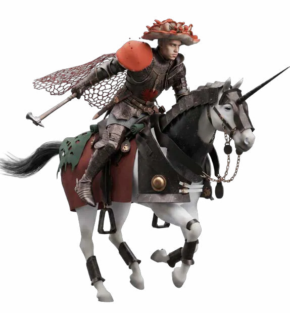
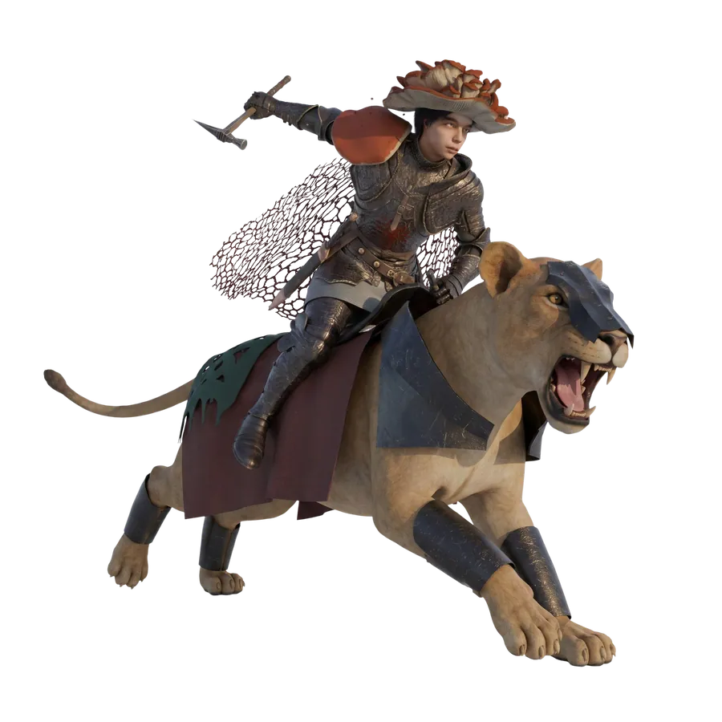
Nhưng nó len lỏi vào tai từng người như thể được tạo ra chỉ dành riêng cho họ.
Tiếng cười dần biến mất. Thay vào đó là một khoảng lặng rất ngắn. Nhưng chính khoảng lặng ấy khiến Brann lạnh sống lưng. Hai thanh kiếm lại chạm nhau. Lần này… Không còn ai nương tay. Âm thanh kim loại vang vọng khắp thung lũng như sấm dội. Bjorn lao tới trước. Eirik lập tức đỡ đòn rồi phản công. Mỗi cú chém đều mạnh hơn lúc nãy. Nhanh hơn. Nặng hơn.
Brann vội chạy tới.
"Dừng lại!"
Tiếng gọi tan vào vách đá rồi quay trở lại thành hàng chục âm thanh hỗn loạn. Hai người không còn nghe thấy tiếng của cậu nữa. Trong tai họ lúc này chỉ còn tiếng kiếm và những lời thách thức méo mó mà Thung Lũng trả về. Những nhát chém ngày càng mạnh. Ngày càng nhanh. Không còn ai nương tay.
"Ngươi sẽ không bao giờ thắng."
"Đừng để hắn vượt qua."
"Nhanh hơn nữa."
Những lời thì thầm không biết từ đâu vọng tới. Chúng không lớn. Chỉ vừa đủ để len vào đầu óc. Từng chút. Từng chút một. Brann nhìn thấy ánh mắt của Bjorn thay đổi trước. Ngọn lửa hiếu thắng vốn chỉ để mua vui bỗng trở nên dữ dội. Ở phía đối diện, Eirik cũng không còn nở nụ cười quen thuộc. Hai người dường như đều đang cố chứng minh điều gì đó. Không phải với người kia. Mà với chính bản thân mình.
Một tiếng rít sắc lạnh bất chợt vang lên từ trên cao. Brann theo phản xạ ngẩng đầu. Con diều hâu. Nó đang lượn thành những vòng tròn phía trên đỉnh núi. Nhưng lần này… Nó không bay một mình. Trên mỏm đá cao nhất, một đàn quạ đen đang đứng bất động. Đôi mắt đỏ sẫm của nó lặng lẽ dõi xuống cuộc đấu bên dưới. Brann bỗng thấy tim mình đập mạnh.
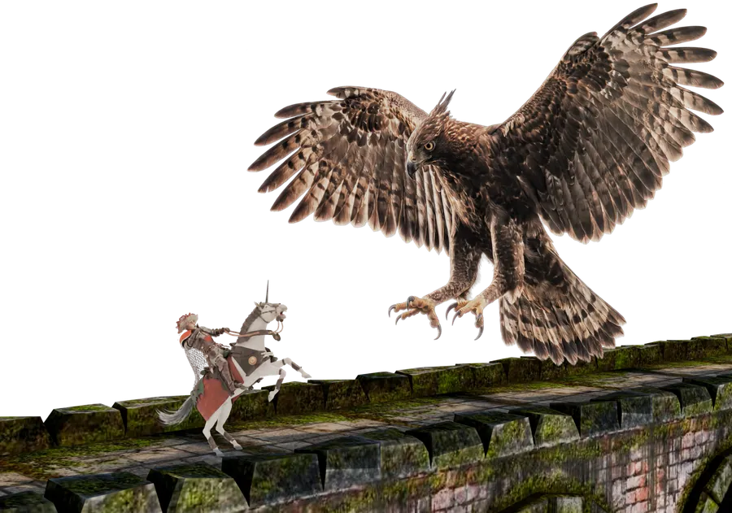
Mọi chuyện… Có gì đó không đúng. Ở phía trước, Bjorn bất ngờ thúc kỳ lân lao lên một mỏm đá cao.
"Đừng chạy!"
Eirik cũng lập tức đuổi theo bằng sư tử cái. Hai linh thú nhảy từ mỏm đá này sang mỏm đá khác. Khoảng cách giữa họ ngày một nguy hiểm. Brann vội chạy theo. Phía trước, con đường bắt đầu thu hẹp lại. Một cây cầu đá tự nhiên bắc ngang qua khe núi hiện ra dưới ánh chiều đang dần tắt.
"Đừng thi nữa!"
"Con đường phía trước hẹp lắm!"
Nhưng tiếng nói của cậu lập tức bị tiếng vọng xé vụn.
"Đừng thi nữa…"
"Thi nữa…"
"Thua…"
"Thắng…"
Những từ ngữ méo mó va đập liên tục vào vách đá. Ngay lúc ấy… Một tảng đá dưới chân Bjorn bất ngờ nứt ra.
Rắc…
Tiếng đá vỡ rất nhỏ. Nhưng đủ khiến kỳ lân khựng lại. Eirik nhìn thấy. Theo bản năng, cậu lập tức kéo mạnh dây cương sư tử để lao tới. Thế nhưng lúc đó… Tiếng vọng không ngừng rót vào tai Eirik những lời thì thầm độc địa.
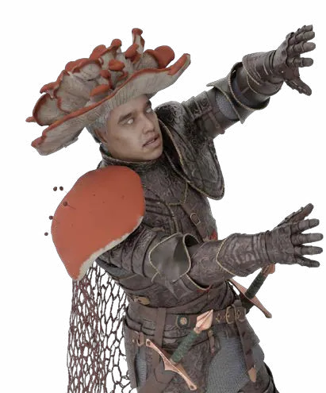
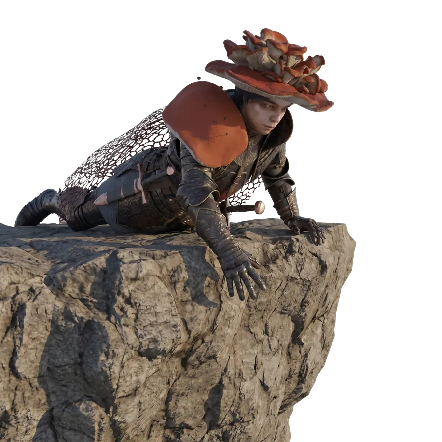
"Đừng kéo hắn…"
"Rồi ngươi sẽ thắng…"
"Chỉ cần buông tay…"
Bàn tay Eirik khựng lại giữa không trung. Chỉ còn một khoảng rất ngắn nữa thôi là cậu có thể nắm lấy cánh tay Bjorn. Thế nhưng, đôi mắt cậu bỗng trở nên trống rỗng. Những lời thì thầm méo mó không ngừng len vào tâm trí, kéo cậu lùi lại giữa ranh giới của lý trí và cơn hiếu thắng.
Ngay khoảnh khắc ấy…
"Rắc!"
Mặt đá vỡ vụn. Toàn bộ phần mép cầu bất ngờ sụp xuống. Bjorn mất thăng bằng. Thân người ngả hẳn về phía vực sâu.
"Bjorn!"
Tiếng hét của Brann vang lên giữa thung lũng. Nó không lớn hơn những tiếng vọng. Nhưng đủ để xé toạc màn sương đang bao phủ trong đầu Eirik.
Eirik như bừng tỉnh. Ánh mắt cậu run lên. Ngay trước mặt cậu, Bjorn đang chới với giữa khoảng không. Đó không còn là đối thủ. Đó là người anh đã cùng mình lớn lên, cùng tập kiếm, cùng rong ruổi trên khắp những nẻo đường. Không một chút do dự, Eirik nhảy khỏi lưng sư tử, ném phăng thanh kiếm xuống đất lao tới. Cậu nằm rạp xuống mép vực, cố với lấy cánh tay đang lơ lửng.
Nhưng khoảng cách vẫn còn quá xa. Đúng lúc ấy, Brann cũng vừa chạy đến. Cậu quỳ xuống phía sau, ghì chặt vai Eirik để cậu không bị trượt theo, rồi vươn hết cánh tay về phía trước.
"Bjorn, bám chặt lấy!"
Ba bàn tay cuối cùng cũng chạm được vào nhau. Cánh tay Brann căng cứng vì gồng sức. Eirik nghiến chặt răng. Ở phía dưới, Bjorn cố gắng bám chặt lấy hai người. Những mảnh đá liên tục rơi xuống vực, va vào vách núi tạo thành những tiếng vọng nặng nề.
Sau một hồi vật lộn, cả ba mới ngã vật xuống nền đá. Không ai nói gì. Chỉ còn tiếng thở gấp hòa lẫn nhịp tim vẫn chưa kịp bình ổn. Một lúc rất lâu sau, Bjorn mới khẽ cất tiếng.
"…Suýt nữa."
Eirik ngồi phịch xuống bên cạnh, cúi đầu nhìn đôi bàn tay mình.
"Ừ."
"Lần đầu tiên…"
"…ta suýt buông tay."
Bjorn quay sang nhìn em trai. Nụ cười quen thuộc trên môi đã biến mất. Cậu đưa tay đấm rất khẽ vào vai Eirik.
"Đồ ngốc."
"Nếu ta rơi thật…"
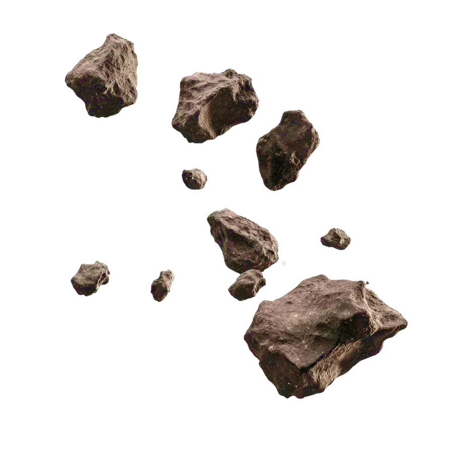
"…thì còn ai chịu thua ngươi nữa."
Eirik khựng lại.
Rồi bật cười.
Một tiếng cười rất nhỏ.
"Ừ."
"Vậy nên lần sau…"
"…đừng làm chuyện ngu ngốc nữa."
Bjorn gật đầu.
"Lần sau."
"Ngươi cũng vậy."
Đúng lúc ấy, mặt đất dưới chân ba người lại rung chuyển. Một tiếng nổ trầm vang lên từ phía trên. Những tảng đá lớn bắt đầu đổ xuống liên tiếp. Hai con thú cưỡi hoảng sợ hí vang rồi lao về hai hướng khác nhau. Con kỳ lân trắng khuất nhanh sau màn bụi, còn sư tử cái cũng biến mất giữa những thân thông đổ gãy. Khói bụi mù mịt bao trùm cả cây cầu. Mũ giáp của hai anh em đã rơi từ lúc nào. Áo choàng đều rách tả tơi. Khuôn mặt lấm đầy bụi đất. Trong khoảnh khắc ấy… Brann không còn nhìn thấy kỳ lân. Cũng chẳng còn nhìn thấy sư tử. Cậu chỉ thấy một người đang ôm cánh tay bị thương, cố gắng đứng dậy giữa làn bụi mờ. Người còn lại vẫn quỳ dưới đất, loạng choạng nhặt thanh kiếm vừa đánh rơi. Một tiếng răng rắc bất chợt vang lên. Brann ngẩng đầu. Một tảng đá khổng lồ đang lao thẳng xuống. Không còn thời gian để suy nghĩ.
"Bjorn!"
Tiếng gọi bật ra gần như theo bản năng. Người đang gượng đứng lập tức quay đầu. Brann lao tới, xô mạnh cậu ngã lăn sang bên.
Ầm!
Tảng đá đập xuống đúng nơi Bjorn vừa đứng. Những mảnh đá vỡ bắn tung khắp mặt đất. Ở phía còn lại, vết nứt đang lan rất nhanh đến chân người còn lại.
"Eirik!"
Không cần thêm bất kỳ lời giải thích nào. Người vừa được gọi lập tức hiểu ý. Cậu lao tới, cùng Brann kéo Bjorn chạy khỏi cây cầu đúng lúc phần đá cuối cùng phía sau sụp xuống ầm ầm.
Ba người lăn xuống một bãi cỏ ở đầu bên kia thung lũng. Mãi đến khi tiếng đá rơi ngừng hẳn, Bjorn mới chống tay ngồi dậy. Cậu nhìn Brann bằng ánh mắt đầy khó hiểu.
"…Sao ngươi biết ta là Bjorn?"
Brann khựng lại. Chính cậu cũng không biết. Cậu lặng lẽ nhìn hai anh em. Lần đầu tiên kể từ ngày gặp họ, cậu không còn tìm con kỳ lân trắng. Cũng chẳng cần nhìn con sư tử cái. Một người vẫn có thói quen cười trước, dù khóe môi còn vương máu. Người còn lại vừa nhặt thanh kiếm của anh mình lên trước, rồi mới cúi xuống nhặt lấy thanh kiếm của chính mình. Brann bất giác mỉm cười.
"Ta cũng không biết."
Cậu khẽ lắc đầu.
"Ta chỉ…"
"…biết đó là ngươi."
Bjorn và Eirik nhìn nhau. Lần này, không ai trêu Brann nữa. Bjorn chỉ khẽ cười, đưa nắm tay đấm nhẹ vào vai em trai.
"Có vẻ…"
"…thằng lùn này cuối cùng cũng nhớ được rồi."
Eirik nhặt chiếc mũ giáp đã méo mó dưới đất, đội lại lên đầu rồi nhếch môi.
"Chậm."
"Nhưng cũng chưa đến nỗi vô vọng."
Brann bật cười. Đó là lần đầu tiên… Cậu không còn nhớ họ bằng kỳ lân và sư tử. Mà bằng chính con người của họ.
Khi mặt trời khuất hẳn sau dãy núi, ba người cũng rời khỏi Thung Lũng Vọng Âm. Họ không nói nhiều trên quãng đường còn lại. Có lẽ vì ai cũng hiểu rằng, chỉ cần chậm một chút nữa thôi… Hôm nay đã có người không thể bước ra ngoài.
Đêm ấy, ba người không đi tiếp. Họ dựng trại dưới chân dãy núi, nơi ngọn gió cuối thu không còn mang theo những tiếng vọng méo mó của Thung Lũng Vọng Âm nữa. Chỉ còn tiếng củi cháy lách tách và mùi nhựa thông thoang thoảng trong không khí. Bjorn và Eirik ngủ rất nhanh. Có lẽ cả hai đã mệt sau một ngày dài. Brann vẫn ngồi bên đống lửa.
Cậu mở chiếc túi da vẫn luôn mang theo bên mình. Từ trong đó, từng mảnh đồng nhỏ, vài thanh thép ngắn và những dụng cụ thợ rèn được cẩn thận lấy ra. Đó đều là những thứ cậu lặng lẽ nhặt dọc đường suốt mấy ngày qua. Không ai biết. Ngay từ khi bắt đầu đồng hành cùng hai anh em, Brann đã nghĩ đến việc sẽ để lại cho họ một món quà. Chiếc búa nhỏ khẽ gõ xuống đe.
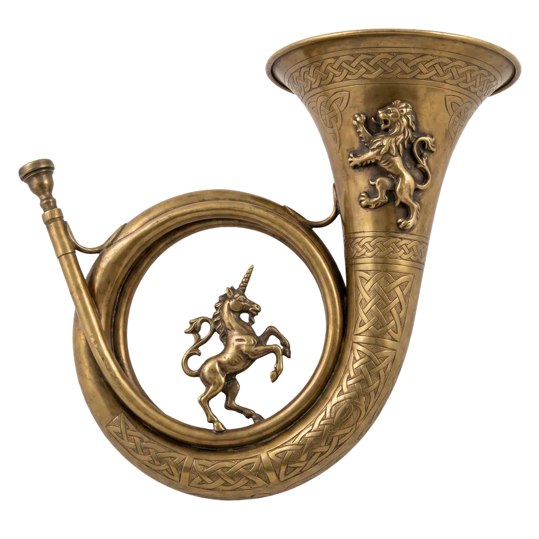
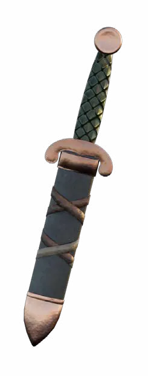
Keng…
Keng…
Âm thanh đều đặn hòa cùng tiếng củi cháy tí tách giữa màn đêm. Không còn là tiếng búa nặng nề của một người thợ rèn làm việc để mưu sinh. Mà giống tiếng ai đó đang tỉ mỉ hoàn thiện một lời hứa. Đến gần sáng, trên nền đá đã xuất hiện hai chiếc Carnyx Tintignac cỡ nhỏ. Thân kèn được đánh bóng đến mức phản chiếu ánh lửa. Trên mỗi chiếc đều có một dấu rèn rất nhỏ của Brann. Chiếc thứ nhất được khắc hình đầu kỳ lân cách điệu. Chiếc còn lại mang hình đầu sư tử. Điều đặc biệt là cả hai hình khắc đều hướng về phía nhau. Khi đặt cạnh, chúng ghép thành một vòng tròn hoàn chỉnh, như thể vốn dĩ chưa bao giờ tồn tại riêng lẻ.
Brann ngắm nhìn chúng rất lâu. Rồi khẽ mỉm cười. Cậu không khắc tên. Cũng không giải thích ý nghĩa. Chỉ cẩn thận đặt mỗi chiếc vào một túi da nhỏ.
Sáng hôm sau, Bjorn là người thức dậy đầu tiên. Vừa mở mắt, cậu đã nhìn thấy một chiếc Carnyx nhỏ nằm ngay cạnh mình.
"Hửm?"
Ở phía bên kia đống lửa, Eirik cũng chống tay ngồi dậy. Bên cạnh cậu là một chiếc kèn khác. Hai anh em cầm chúng lên ngắm nghía. Thân kèn được đánh bóng cẩn thận. Một chiếc khắc hình đầu kỳ lân, chiếc còn lại khắc đầu sư tử. Cả hai đều hướng về phía nhau. Bjorn tò mò đưa hai chiếc lại gần. Hai hình khắc lặng lẽ khép kín thành một vòng tròn hoàn chỉnh. Cậu khẽ huýt sáo.
"Đẹp đấy."
Eirik xoay chiếc kèn trong tay vài vòng rồi buộc ngay vào bên hông.
"Ngươi làm à?"
Brann chỉ khẽ gật đầu.
Thấy hai người vẫn đang chăm chú ngắm nghía, cậu lặng lẽ đưa tay vào túi áo.
"Là ba chiếc."
Bjorn và Eirik cùng ngẩng lên. Brann lấy ra chiếc Carnyx cuối cùng. Nó nhỏ hơn một chút. Thân kèn vẫn mang cùng kiểu chế tác, nhưng thay vì đầu kỳ lân hay đầu sư tử, trên thân chỉ khắc một chiếc búa thợ rèn cách điệu. Ở mặt sau, giống hệt hai chiếc còn lại, là dấu rèn nhỏ của Brann.
Bjorn nhìn chiếc kèn trong tay mình. Rồi nhìn sang chiếc của Brann. Khóe môi cậu chậm rãi nhếch lên.
"Vậy…"
"Từ giờ."
"Nếu có chuyện."
"…thì thổi."
Brann gật đầu.
"Ừ."
Eirik cười.
"Đừng thổi chỉ để gọi bọn ta đi nấu súp."
Bjorn phá lên cười.
"Phải rồi."
"Nhỡ lại toàn nấm."
Brann bất lực lắc đầu.
"Lần này…"
"…ta sẽ để hai ngươi tự nấu."
Ba người cùng bật cười. Tiếng cười vang lên giữa khu rừng thông, nhẹ nhàng hơn rất nhiều so với những tiếng vọng méo mó ở thung lũng.
Ngày chia tay đến nhanh hơn cả ba người tưởng.
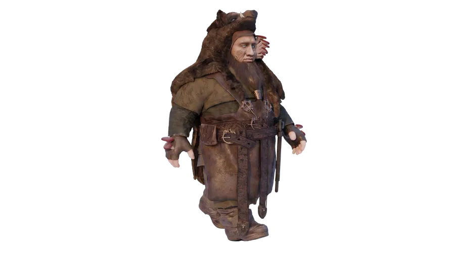
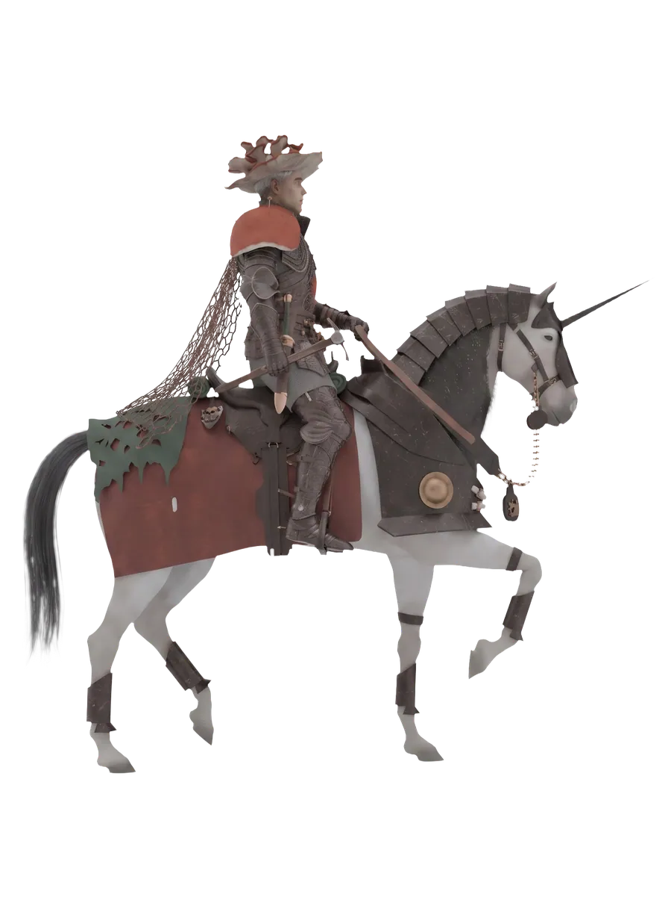
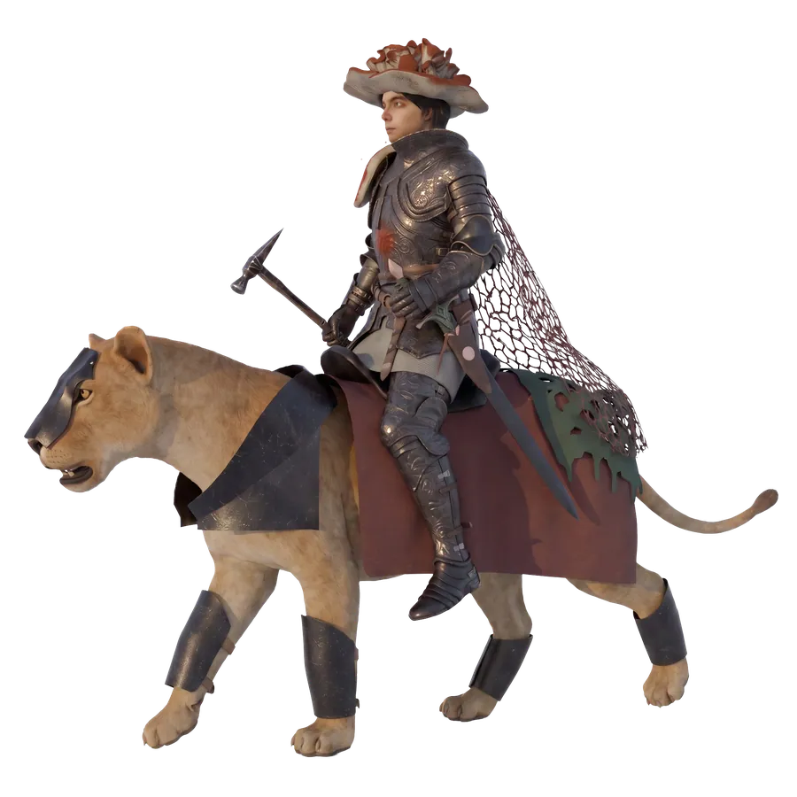
Sáng sớm, màn sương còn phủ kín những hàng thông. Ánh nắng đầu ngày len qua kẽ lá, rọi xuống khoảng đất nơi đống lửa đêm qua chỉ còn lại chút tro tàn. Brann cẩn thận cất chiếc Carnyx của mình vào túi. Bjorn siết lại dây cương cho kỳ lân. Eirik vuốt nhẹ bờm con sư tử cái. Không ai vội lên đường. Cũng không ai biết nên nói gì trước. Cuối cùng, Bjorn là người phá tan bầu không khí im lặng.
Cậu nhìn về phía con đường kéo dài xuyên qua khu rừng.
"Đường phía trước…"
"…nguy hiểm hơn nhiều."
Brann khẽ gật đầu. Bjorn nhếch môi cười.
"Đừng chết."
"Ít nhất là…"
"… trước khi bọn ta gặp lại."
Brann nhìn cậu một lúc. Rồi cũng mỉm cười.
"Ngươi nói như thể…"
"… các ngươi sẽ sống lâu hơn ta vậy."
Hai anh em nhìn nhau. Rồi cùng phá lên cười.
"Thằng lùn này…"
"…có vẻ khôn hơn nhiều rồi đấy."
Bjorn chống chân lên bàn đạp, nhẹ nhàng nhảy lên lưng kỳ lân. Ở bên cạnh, Eirik cũng leo lên lưng sư tử cái bằng một động tác dứt khoát. Bjorn kéo nhẹ dây cương.
"Thi không?"
Brann ngẩng đầu.
"…Thi gì?"
Eirik chống cằm lên chuôi kiếm, giả vờ suy nghĩ.
"Thi xem…"
"…ai gặp lại Brann trước."
"Không được."
Bjorn lập tức phản đối.
"Lần này…"
"…không tính."
Brann nhíu mày.
"Tại sao?"
Bjorn cười rất tươi.
"Vì bọn ta sẽ đến cùng lúc."
Eirik khẽ gật đầu.
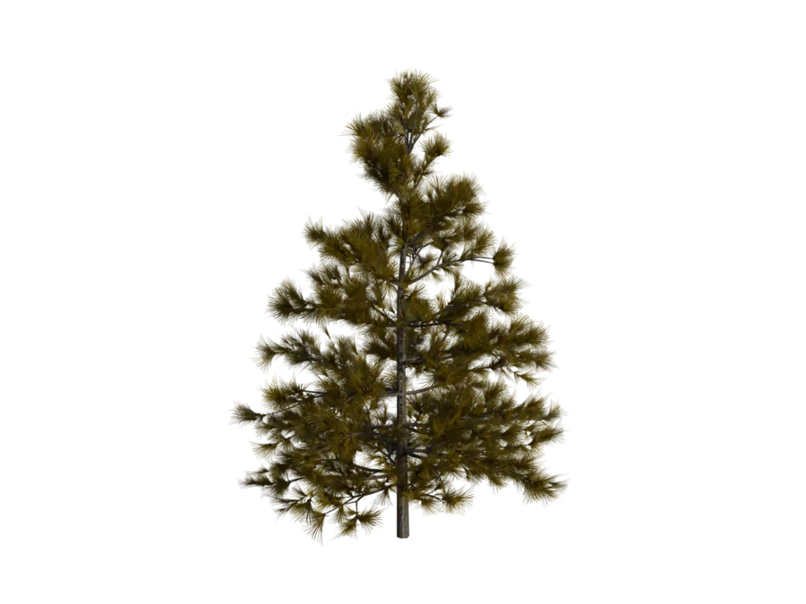
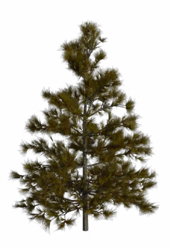
Nói rồi, hai linh thú chậm rãi quay người. Tiếng vó ngựa và tiếng chân sư tử dần vang trên con đường phủ đầy lá thông. Đi được một quãng. Bjorn bỗng kéo cương dừng lại. Cậu không quay đầu. Không vẫy tay. Chỉ lặng lẽ giơ chiếc Carnyx lên cao. Ở phía bên kia, Eirik cũng làm điều tương tự. Hai tiếng kèn đồng thời cất lên. Một âm thanh cao, trong và mạnh mẽ. Một âm thanh trầm, dày và vững chãi. Hai tiếng kèn hòa vào nhau, ngân dài khắp cánh rừng. Brann khẽ mỉm cười. Cậu cũng đưa chiếc Carnyx của mình lên môi. Một tiếng kèn thứ ba vang lên. Không cao như Bjorn. Không trầm như Eirik. Nhưng vừa đủ để nối hai thanh âm ấy lại thành một giai điệu hoàn chỉnh. Ba tiếng kèn hòa quyện giữa rừng thông. Rồi tan dần trong gió. Chẳng mấy chốc, cả hai đã khuất sau triền đồi. Khu rừng lại trở về yên tĩnh. Brann vẫn đứng đó rất lâu.
Có lẽ… Đó chính là cách hai anh em nói lời tạm biệt. Không bằng những câu nói lớn lao. Mà bằng một lời hẹn rằng, nếu một ngày nào đó tiếng kèn ấy lại vang lên giữa núi rừng, sẽ không ai phải chạy đến một mình. Brann mỉm cười. Rồi quay lưng bước tiếp. Lần này, cậu không còn là một người lùn lạc lối đi tìm nơi mình thuộc về nữa. Ở đâu đó phía trước, con đường vẫn tiếp tục mở ra giữa rừng già.
Và trên con đường ấy… Một cuộc gặp gỡ mới đang lặng lẽ chờ đợi.
"Đôi khi, chiến thắng vĩ đại nhất không phải là vượt qua người đứng cạnh mình, mà là vẫn còn có người đứng cạnh mình sau mọi cuộc chiến."